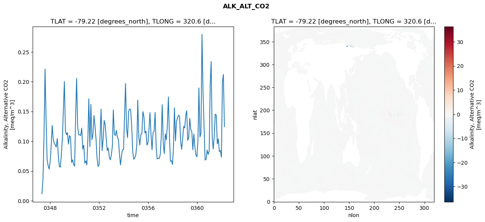
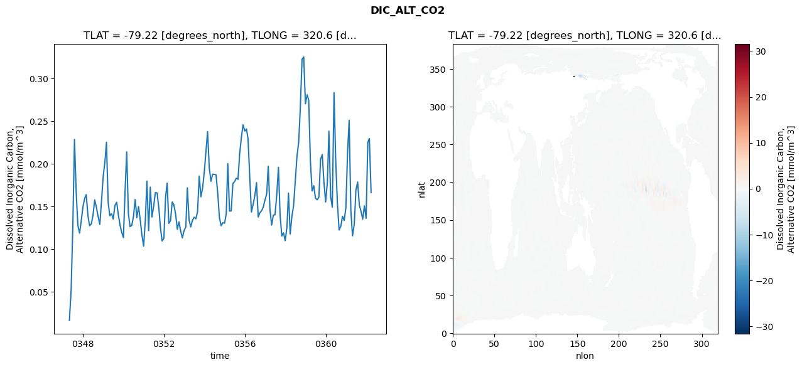
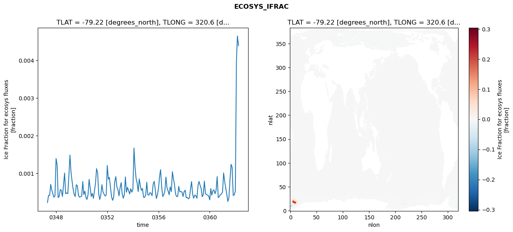
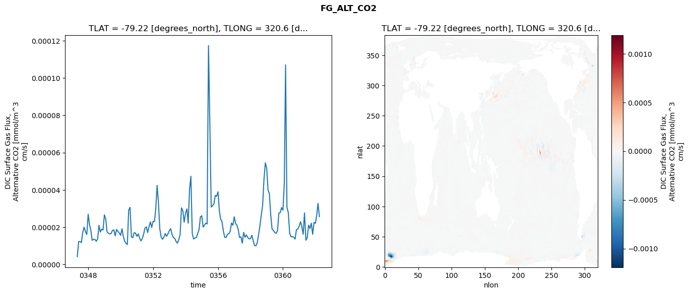

glb-dor_North_Atlantic_basin_006_1999-04-01_00025#
Simulation details#
Case: smyle.cdr-atlas-v0.glb-dor_North_Atlantic_basin_006_1999-04-01_00025.001
Basin: North_Atlantic_basin
Polygon: 6.0
Start date: 1999-04
Show code cell source Hide code cell source
import xarray as xr
import matplotlib.pyplot as plt
Show code cell source Hide code cell source
zarr_store = "/path/to/zarr/store"
# Parameters
zarr_store = "/global/cfs/projectdirs/m4746/Projects/Ocean-CDR-Atlas-v0/data/validation/smyle.cdr-atlas-v0.glb-dor_North_Atlantic_basin_006_1999-04-01_00025.001.validation.zarr"
Show code cell source Hide code cell source
%%time
ds_o = xr.open_zarr(zarr_store).compute()
ds_o
CPU times: user 673 ms, sys: 473 ms, total: 1.15 s
Wall time: 1.4 s
<xarray.Dataset> Size: 2MB
Dimensions: (nlat: 384, nlon: 320, time: 180)
Coordinates:
TLAT float64 8B -79.22
TLONG float64 8B 320.6
ULAT float64 8B -78.95
ULONG float64 8B 321.1
* time (time) object 1kB 0347-05-01 00:00:00 ... 0362-04-01 0...
z_t float32 4B 500.0
Dimensions without coordinates: nlat, nlon
Data variables:
ALK_ALT_CO2_diff (nlat, nlon) float32 492kB nan nan nan ... nan nan nan
ALK_ALT_CO2_rmse (time) float64 1kB 0.01167 0.0369 ... 0.2122 0.1244
DIC_ALT_CO2_diff (nlat, nlon) float32 492kB nan nan nan ... nan nan nan
DIC_ALT_CO2_rmse (time) float64 1kB 0.01639 0.05157 ... 0.2295 0.1663
ECOSYS_IFRAC_diff (nlat, nlon) float32 492kB nan nan nan ... nan nan nan
ECOSYS_IFRAC_rmse (time) float64 1kB 0.0002292 0.0004193 ... 0.004388
FG_ALT_CO2_diff (nlat, nlon) float32 492kB nan nan nan ... nan nan nan
FG_ALT_CO2_rmse (time) float64 1kB 4.135e-06 1.224e-05 ... 2.559e-05xarray.Dataset
- nlat: 384
- nlon: 320
- time: 180
- TLAT()float64-79.22
- long_name :
- array of t-grid latitudes
- units :
- degrees_north
array(-79.22052261)
- TLONG()float64320.6
- long_name :
- array of t-grid longitudes
- units :
- degrees_east
array(320.56250892)
- ULAT()float64-78.95
- long_name :
- array of u-grid latitudes
- units :
- degrees_north
array(-78.95289509)
- ULONG()float64321.1
- long_name :
- array of u-grid longitudes
- units :
- degrees_east
array(321.12500894)
- time(time)object0347-05-01 00:00:00 ... 0362-04-...
- bounds :
- time_bound
- long_name :
- time
array([cftime.DatetimeNoLeap(347, 5, 1, 0, 0, 0, 0, has_year_zero=True), cftime.DatetimeNoLeap(347, 6, 1, 0, 0, 0, 0, has_year_zero=True), cftime.DatetimeNoLeap(347, 7, 1, 0, 0, 0, 0, has_year_zero=True), cftime.DatetimeNoLeap(347, 8, 1, 0, 0, 0, 0, has_year_zero=True), cftime.DatetimeNoLeap(347, 9, 1, 0, 0, 0, 0, has_year_zero=True), cftime.DatetimeNoLeap(347, 10, 1, 0, 0, 0, 0, has_year_zero=True), cftime.DatetimeNoLeap(347, 11, 1, 0, 0, 0, 0, has_year_zero=True), cftime.DatetimeNoLeap(347, 12, 1, 0, 0, 0, 0, has_year_zero=True), cftime.DatetimeNoLeap(348, 1, 1, 0, 0, 0, 0, has_year_zero=True), cftime.DatetimeNoLeap(348, 2, 1, 0, 0, 0, 0, has_year_zero=True), cftime.DatetimeNoLeap(348, 3, 1, 0, 0, 0, 0, has_year_zero=True), cftime.DatetimeNoLeap(348, 4, 1, 0, 0, 0, 0, has_year_zero=True), cftime.DatetimeNoLeap(348, 5, 1, 0, 0, 0, 0, has_year_zero=True), cftime.DatetimeNoLeap(348, 6, 1, 0, 0, 0, 0, has_year_zero=True), cftime.DatetimeNoLeap(348, 7, 1, 0, 0, 0, 0, has_year_zero=True), cftime.DatetimeNoLeap(348, 8, 1, 0, 0, 0, 0, has_year_zero=True), cftime.DatetimeNoLeap(348, 9, 1, 0, 0, 0, 0, has_year_zero=True), cftime.DatetimeNoLeap(348, 10, 1, 0, 0, 0, 0, has_year_zero=True), cftime.DatetimeNoLeap(348, 11, 1, 0, 0, 0, 0, has_year_zero=True), cftime.DatetimeNoLeap(348, 12, 1, 0, 0, 0, 0, has_year_zero=True), cftime.DatetimeNoLeap(349, 1, 1, 0, 0, 0, 0, has_year_zero=True), cftime.DatetimeNoLeap(349, 2, 1, 0, 0, 0, 0, has_year_zero=True), cftime.DatetimeNoLeap(349, 3, 1, 0, 0, 0, 0, has_year_zero=True), cftime.DatetimeNoLeap(349, 4, 1, 0, 0, 0, 0, has_year_zero=True), cftime.DatetimeNoLeap(349, 5, 1, 0, 0, 0, 0, has_year_zero=True), cftime.DatetimeNoLeap(349, 6, 1, 0, 0, 0, 0, has_year_zero=True), cftime.DatetimeNoLeap(349, 7, 1, 0, 0, 0, 0, has_year_zero=True), cftime.DatetimeNoLeap(349, 8, 1, 0, 0, 0, 0, has_year_zero=True), cftime.DatetimeNoLeap(349, 9, 1, 0, 0, 0, 0, has_year_zero=True), cftime.DatetimeNoLeap(349, 10, 1, 0, 0, 0, 0, has_year_zero=True), cftime.DatetimeNoLeap(349, 11, 1, 0, 0, 0, 0, has_year_zero=True), cftime.DatetimeNoLeap(349, 12, 1, 0, 0, 0, 0, has_year_zero=True), cftime.DatetimeNoLeap(350, 1, 1, 0, 0, 0, 0, has_year_zero=True), cftime.DatetimeNoLeap(350, 2, 1, 0, 0, 0, 0, has_year_zero=True), cftime.DatetimeNoLeap(350, 3, 1, 0, 0, 0, 0, has_year_zero=True), cftime.DatetimeNoLeap(350, 4, 1, 0, 0, 0, 0, has_year_zero=True), cftime.DatetimeNoLeap(350, 5, 1, 0, 0, 0, 0, has_year_zero=True), cftime.DatetimeNoLeap(350, 6, 1, 0, 0, 0, 0, has_year_zero=True), cftime.DatetimeNoLeap(350, 7, 1, 0, 0, 0, 0, has_year_zero=True), cftime.DatetimeNoLeap(350, 8, 1, 0, 0, 0, 0, has_year_zero=True), cftime.DatetimeNoLeap(350, 9, 1, 0, 0, 0, 0, has_year_zero=True), cftime.DatetimeNoLeap(350, 10, 1, 0, 0, 0, 0, has_year_zero=True), cftime.DatetimeNoLeap(350, 11, 1, 0, 0, 0, 0, has_year_zero=True), cftime.DatetimeNoLeap(350, 12, 1, 0, 0, 0, 0, has_year_zero=True), cftime.DatetimeNoLeap(351, 1, 1, 0, 0, 0, 0, has_year_zero=True), cftime.DatetimeNoLeap(351, 2, 1, 0, 0, 0, 0, has_year_zero=True), cftime.DatetimeNoLeap(351, 3, 1, 0, 0, 0, 0, has_year_zero=True), cftime.DatetimeNoLeap(351, 4, 1, 0, 0, 0, 0, has_year_zero=True), cftime.DatetimeNoLeap(351, 5, 1, 0, 0, 0, 0, has_year_zero=True), cftime.DatetimeNoLeap(351, 6, 1, 0, 0, 0, 0, has_year_zero=True), cftime.DatetimeNoLeap(351, 7, 1, 0, 0, 0, 0, has_year_zero=True), cftime.DatetimeNoLeap(351, 8, 1, 0, 0, 0, 0, has_year_zero=True), cftime.DatetimeNoLeap(351, 9, 1, 0, 0, 0, 0, has_year_zero=True), cftime.DatetimeNoLeap(351, 10, 1, 0, 0, 0, 0, has_year_zero=True), cftime.DatetimeNoLeap(351, 11, 1, 0, 0, 0, 0, has_year_zero=True), cftime.DatetimeNoLeap(351, 12, 1, 0, 0, 0, 0, has_year_zero=True), cftime.DatetimeNoLeap(352, 1, 1, 0, 0, 0, 0, has_year_zero=True), cftime.DatetimeNoLeap(352, 2, 1, 0, 0, 0, 0, has_year_zero=True), cftime.DatetimeNoLeap(352, 3, 1, 0, 0, 0, 0, has_year_zero=True), cftime.DatetimeNoLeap(352, 4, 1, 0, 0, 0, 0, has_year_zero=True), cftime.DatetimeNoLeap(352, 5, 1, 0, 0, 0, 0, has_year_zero=True), cftime.DatetimeNoLeap(352, 6, 1, 0, 0, 0, 0, has_year_zero=True), cftime.DatetimeNoLeap(352, 7, 1, 0, 0, 0, 0, has_year_zero=True), cftime.DatetimeNoLeap(352, 8, 1, 0, 0, 0, 0, has_year_zero=True), cftime.DatetimeNoLeap(352, 9, 1, 0, 0, 0, 0, has_year_zero=True), cftime.DatetimeNoLeap(352, 10, 1, 0, 0, 0, 0, has_year_zero=True), cftime.DatetimeNoLeap(352, 11, 1, 0, 0, 0, 0, has_year_zero=True), cftime.DatetimeNoLeap(352, 12, 1, 0, 0, 0, 0, has_year_zero=True), cftime.DatetimeNoLeap(353, 1, 1, 0, 0, 0, 0, has_year_zero=True), cftime.DatetimeNoLeap(353, 2, 1, 0, 0, 0, 0, has_year_zero=True), cftime.DatetimeNoLeap(353, 3, 1, 0, 0, 0, 0, has_year_zero=True), cftime.DatetimeNoLeap(353, 4, 1, 0, 0, 0, 0, has_year_zero=True), cftime.DatetimeNoLeap(353, 5, 1, 0, 0, 0, 0, has_year_zero=True), cftime.DatetimeNoLeap(353, 6, 1, 0, 0, 0, 0, has_year_zero=True), cftime.DatetimeNoLeap(353, 7, 1, 0, 0, 0, 0, has_year_zero=True), cftime.DatetimeNoLeap(353, 8, 1, 0, 0, 0, 0, has_year_zero=True), cftime.DatetimeNoLeap(353, 9, 1, 0, 0, 0, 0, has_year_zero=True), cftime.DatetimeNoLeap(353, 10, 1, 0, 0, 0, 0, has_year_zero=True), cftime.DatetimeNoLeap(353, 11, 1, 0, 0, 0, 0, has_year_zero=True), cftime.DatetimeNoLeap(353, 12, 1, 0, 0, 0, 0, has_year_zero=True), cftime.DatetimeNoLeap(354, 1, 1, 0, 0, 0, 0, has_year_zero=True), cftime.DatetimeNoLeap(354, 2, 1, 0, 0, 0, 0, has_year_zero=True), cftime.DatetimeNoLeap(354, 3, 1, 0, 0, 0, 0, has_year_zero=True), cftime.DatetimeNoLeap(354, 4, 1, 0, 0, 0, 0, has_year_zero=True), cftime.DatetimeNoLeap(354, 5, 1, 0, 0, 0, 0, has_year_zero=True), cftime.DatetimeNoLeap(354, 6, 1, 0, 0, 0, 0, has_year_zero=True), cftime.DatetimeNoLeap(354, 7, 1, 0, 0, 0, 0, has_year_zero=True), cftime.DatetimeNoLeap(354, 8, 1, 0, 0, 0, 0, has_year_zero=True), cftime.DatetimeNoLeap(354, 9, 1, 0, 0, 0, 0, has_year_zero=True), cftime.DatetimeNoLeap(354, 10, 1, 0, 0, 0, 0, has_year_zero=True), cftime.DatetimeNoLeap(354, 11, 1, 0, 0, 0, 0, has_year_zero=True), cftime.DatetimeNoLeap(354, 12, 1, 0, 0, 0, 0, has_year_zero=True), cftime.DatetimeNoLeap(355, 1, 1, 0, 0, 0, 0, has_year_zero=True), cftime.DatetimeNoLeap(355, 2, 1, 0, 0, 0, 0, has_year_zero=True), cftime.DatetimeNoLeap(355, 3, 1, 0, 0, 0, 0, has_year_zero=True), cftime.DatetimeNoLeap(355, 4, 1, 0, 0, 0, 0, has_year_zero=True), cftime.DatetimeNoLeap(355, 5, 1, 0, 0, 0, 0, has_year_zero=True), cftime.DatetimeNoLeap(355, 6, 1, 0, 0, 0, 0, has_year_zero=True), cftime.DatetimeNoLeap(355, 7, 1, 0, 0, 0, 0, has_year_zero=True), cftime.DatetimeNoLeap(355, 8, 1, 0, 0, 0, 0, has_year_zero=True), cftime.DatetimeNoLeap(355, 9, 1, 0, 0, 0, 0, has_year_zero=True), cftime.DatetimeNoLeap(355, 10, 1, 0, 0, 0, 0, has_year_zero=True), cftime.DatetimeNoLeap(355, 11, 1, 0, 0, 0, 0, has_year_zero=True), cftime.DatetimeNoLeap(355, 12, 1, 0, 0, 0, 0, has_year_zero=True), cftime.DatetimeNoLeap(356, 1, 1, 0, 0, 0, 0, has_year_zero=True), cftime.DatetimeNoLeap(356, 2, 1, 0, 0, 0, 0, has_year_zero=True), cftime.DatetimeNoLeap(356, 3, 1, 0, 0, 0, 0, has_year_zero=True), cftime.DatetimeNoLeap(356, 4, 1, 0, 0, 0, 0, has_year_zero=True), cftime.DatetimeNoLeap(356, 5, 1, 0, 0, 0, 0, has_year_zero=True), cftime.DatetimeNoLeap(356, 6, 1, 0, 0, 0, 0, has_year_zero=True), cftime.DatetimeNoLeap(356, 7, 1, 0, 0, 0, 0, has_year_zero=True), cftime.DatetimeNoLeap(356, 8, 1, 0, 0, 0, 0, has_year_zero=True), cftime.DatetimeNoLeap(356, 9, 1, 0, 0, 0, 0, has_year_zero=True), cftime.DatetimeNoLeap(356, 10, 1, 0, 0, 0, 0, has_year_zero=True), cftime.DatetimeNoLeap(356, 11, 1, 0, 0, 0, 0, has_year_zero=True), cftime.DatetimeNoLeap(356, 12, 1, 0, 0, 0, 0, has_year_zero=True), cftime.DatetimeNoLeap(357, 1, 1, 0, 0, 0, 0, has_year_zero=True), cftime.DatetimeNoLeap(357, 2, 1, 0, 0, 0, 0, has_year_zero=True), cftime.DatetimeNoLeap(357, 3, 1, 0, 0, 0, 0, has_year_zero=True), cftime.DatetimeNoLeap(357, 4, 1, 0, 0, 0, 0, has_year_zero=True), cftime.DatetimeNoLeap(357, 5, 1, 0, 0, 0, 0, has_year_zero=True), cftime.DatetimeNoLeap(357, 6, 1, 0, 0, 0, 0, has_year_zero=True), cftime.DatetimeNoLeap(357, 7, 1, 0, 0, 0, 0, has_year_zero=True), cftime.DatetimeNoLeap(357, 8, 1, 0, 0, 0, 0, has_year_zero=True), cftime.DatetimeNoLeap(357, 9, 1, 0, 0, 0, 0, has_year_zero=True), cftime.DatetimeNoLeap(357, 10, 1, 0, 0, 0, 0, has_year_zero=True), cftime.DatetimeNoLeap(357, 11, 1, 0, 0, 0, 0, has_year_zero=True), cftime.DatetimeNoLeap(357, 12, 1, 0, 0, 0, 0, has_year_zero=True), cftime.DatetimeNoLeap(358, 1, 1, 0, 0, 0, 0, has_year_zero=True), cftime.DatetimeNoLeap(358, 2, 1, 0, 0, 0, 0, has_year_zero=True), cftime.DatetimeNoLeap(358, 3, 1, 0, 0, 0, 0, has_year_zero=True), cftime.DatetimeNoLeap(358, 4, 1, 0, 0, 0, 0, has_year_zero=True), cftime.DatetimeNoLeap(358, 5, 1, 0, 0, 0, 0, has_year_zero=True), cftime.DatetimeNoLeap(358, 6, 1, 0, 0, 0, 0, has_year_zero=True), cftime.DatetimeNoLeap(358, 7, 1, 0, 0, 0, 0, has_year_zero=True), cftime.DatetimeNoLeap(358, 8, 1, 0, 0, 0, 0, has_year_zero=True), cftime.DatetimeNoLeap(358, 9, 1, 0, 0, 0, 0, has_year_zero=True), cftime.DatetimeNoLeap(358, 10, 1, 0, 0, 0, 0, has_year_zero=True), cftime.DatetimeNoLeap(358, 11, 1, 0, 0, 0, 0, has_year_zero=True), cftime.DatetimeNoLeap(358, 12, 1, 0, 0, 0, 0, has_year_zero=True), cftime.DatetimeNoLeap(359, 1, 1, 0, 0, 0, 0, has_year_zero=True), cftime.DatetimeNoLeap(359, 2, 1, 0, 0, 0, 0, has_year_zero=True), cftime.DatetimeNoLeap(359, 3, 1, 0, 0, 0, 0, has_year_zero=True), cftime.DatetimeNoLeap(359, 4, 1, 0, 0, 0, 0, has_year_zero=True), cftime.DatetimeNoLeap(359, 5, 1, 0, 0, 0, 0, has_year_zero=True), cftime.DatetimeNoLeap(359, 6, 1, 0, 0, 0, 0, has_year_zero=True), cftime.DatetimeNoLeap(359, 7, 1, 0, 0, 0, 0, has_year_zero=True), cftime.DatetimeNoLeap(359, 8, 1, 0, 0, 0, 0, has_year_zero=True), cftime.DatetimeNoLeap(359, 9, 1, 0, 0, 0, 0, has_year_zero=True), cftime.DatetimeNoLeap(359, 10, 1, 0, 0, 0, 0, has_year_zero=True), cftime.DatetimeNoLeap(359, 11, 1, 0, 0, 0, 0, has_year_zero=True), cftime.DatetimeNoLeap(359, 12, 1, 0, 0, 0, 0, has_year_zero=True), cftime.DatetimeNoLeap(360, 1, 1, 0, 0, 0, 0, has_year_zero=True), cftime.DatetimeNoLeap(360, 2, 1, 0, 0, 0, 0, has_year_zero=True), cftime.DatetimeNoLeap(360, 3, 1, 0, 0, 0, 0, has_year_zero=True), cftime.DatetimeNoLeap(360, 4, 1, 0, 0, 0, 0, has_year_zero=True), cftime.DatetimeNoLeap(360, 5, 1, 0, 0, 0, 0, has_year_zero=True), cftime.DatetimeNoLeap(360, 6, 1, 0, 0, 0, 0, has_year_zero=True), cftime.DatetimeNoLeap(360, 7, 1, 0, 0, 0, 0, has_year_zero=True), cftime.DatetimeNoLeap(360, 8, 1, 0, 0, 0, 0, has_year_zero=True), cftime.DatetimeNoLeap(360, 9, 1, 0, 0, 0, 0, has_year_zero=True), cftime.DatetimeNoLeap(360, 10, 1, 0, 0, 0, 0, has_year_zero=True), cftime.DatetimeNoLeap(360, 11, 1, 0, 0, 0, 0, has_year_zero=True), cftime.DatetimeNoLeap(360, 12, 1, 0, 0, 0, 0, has_year_zero=True), cftime.DatetimeNoLeap(361, 1, 1, 0, 0, 0, 0, has_year_zero=True), cftime.DatetimeNoLeap(361, 2, 1, 0, 0, 0, 0, has_year_zero=True), cftime.DatetimeNoLeap(361, 3, 1, 0, 0, 0, 0, has_year_zero=True), cftime.DatetimeNoLeap(361, 4, 1, 0, 0, 0, 0, has_year_zero=True), cftime.DatetimeNoLeap(361, 5, 1, 0, 0, 0, 0, has_year_zero=True), cftime.DatetimeNoLeap(361, 6, 1, 0, 0, 0, 0, has_year_zero=True), cftime.DatetimeNoLeap(361, 7, 1, 0, 0, 0, 0, has_year_zero=True), cftime.DatetimeNoLeap(361, 8, 1, 0, 0, 0, 0, has_year_zero=True), cftime.DatetimeNoLeap(361, 9, 1, 0, 0, 0, 0, has_year_zero=True), cftime.DatetimeNoLeap(361, 10, 1, 0, 0, 0, 0, has_year_zero=True), cftime.DatetimeNoLeap(361, 11, 1, 0, 0, 0, 0, has_year_zero=True), cftime.DatetimeNoLeap(361, 12, 1, 0, 0, 0, 0, has_year_zero=True), cftime.DatetimeNoLeap(362, 1, 1, 0, 0, 0, 0, has_year_zero=True), cftime.DatetimeNoLeap(362, 2, 1, 0, 0, 0, 0, has_year_zero=True), cftime.DatetimeNoLeap(362, 3, 1, 0, 0, 0, 0, has_year_zero=True), cftime.DatetimeNoLeap(362, 4, 1, 0, 0, 0, 0, has_year_zero=True)], dtype=object) - z_t()float32500.0
- long_name :
- depth from surface to midpoint of layer
- positive :
- down
- units :
- centimeters
- valid_max :
- 537500.0
- valid_min :
- 500.0
array(500., dtype=float32)
- ALK_ALT_CO2_diff(nlat, nlon)float32nan nan nan nan ... nan nan nan nan
- cell_methods :
- time: mean
- grid_loc :
- 3111
- long_name :
- Alkalinity, Alternative CO2
- units :
- meq/m^3
array([[ nan, nan, nan, ..., nan, nan, nan], [ nan, nan, nan, ..., nan, nan, nan], [0.0090332 , 0.01220703, 0.01342773, ..., nan, nan, nan], ..., [ nan, nan, nan, ..., nan, nan, nan], [ nan, nan, nan, ..., nan, nan, nan], [ nan, nan, nan, ..., nan, nan, nan]], dtype=float32) - ALK_ALT_CO2_rmse(time)float640.01167 0.0369 ... 0.2122 0.1244
- cell_methods :
- time: mean
- grid_loc :
- 3111
- long_name :
- Alkalinity, Alternative CO2
- units :
- meq/m^3
array([0.01166722, 0.03689561, 0.10971322, 0.22129198, 0.13704594, 0.06960163, 0.05888903, 0.05318121, 0.06632505, 0.09274935, 0.12651254, 0.10431578, 0.09646311, 0.09411606, 0.09012626, 0.10457875, 0.07603313, 0.05789328, 0.05626667, 0.07860468, 0.1045995 , 0.15627937, 0.20043087, 0.11715035, 0.11083542, 0.11447342, 0.09507013, 0.10948811, 0.10676531, 0.06440695, 0.06890452, 0.06108284, 0.05794931, 0.14486172, 0.20568845, 0.12519088, 0.11072972, 0.11106847, 0.10956778, 0.12207055, 0.08673324, 0.09330802, 0.0633692 , 0.06686163, 0.06034957, 0.10583205, 0.17124459, 0.09087573, 0.16194235, 0.10262724, 0.11065996, 0.14320662, 0.12535612, 0.10407314, 0.07165829, 0.05755201, 0.06091403, 0.11187774, 0.15389069, 0.08414891, 0.10305212, 0.13502488, 0.12745582, 0.10491509, 0.08423727, 0.08855522, 0.07413958, 0.06872025, 0.07668663, 0.09185752, 0.15259396, 0.11171624, 0.10953629, 0.11818625, 0.1066658 , 0.10312053, 0.07844173, 0.06011257, 0.07602568, 0.08565539, 0.08625431, 0.14464728, 0.19693338, 0.12092314, 0.10609108, 0.14993921, 0.15423977, 0.15288771, 0.12580023, 0.08295662, 0.0697026 , 0.07191735, 0.07698171, 0.09432511, 0.16912188, 0.1061833 , 0.09358701, 0.11132437, 0.11268918, 0.14984249, 0.14144304, 0.11372034, 0.11692556, 0.09339522, 0.09759257, 0.12160242, 0.14792553, 0.11044881, 0.0856547 , 0.11470984, 0.11637296, 0.14842849, 0.09015895, 0.07034701, 0.07129803, 0.07080873, 0.07761982, 0.10874391, 0.16138559, 0.09746816, 0.07906583, 0.11254754, 0.10219651, 0.12724156, 0.17449771, 0.11123996, 0.06639436, 0.06741952, 0.06095594, 0.09076537, 0.156157 , 0.10055509, 0.13309998, 0.13949405, 0.14380755, 0.14158945, 0.10033665, 0.0864571 , 0.10442486, 0.12500587, 0.12241451, 0.14362554, 0.15131208, 0.10141259, 0.10641109, 0.13844921, 0.11940778, 0.11633582, 0.08553978, 0.11218673, 0.08984723, 0.0769361 , 0.07382621, 0.10260778, 0.18952272, 0.1070549 , 0.11342821, 0.27936075, 0.18458689, 0.12574356, 0.06833721, 0.06969809, 0.08515764, 0.07779751, 0.08325876, 0.19428908, 0.23384248, 0.1074997 , 0.08686568, 0.10776593, 0.14546237, 0.14406945, 0.09546643, 0.10397535, 0.08276924, 0.0844156 , 0.07317923, 0.19953559, 0.21222199, 0.12444725]) - DIC_ALT_CO2_diff(nlat, nlon)float32nan nan nan nan ... nan nan nan nan
- cell_methods :
- time: mean
- grid_loc :
- 3111
- long_name :
- Dissolved Inorganic Carbon, Alternative CO2
- units :
- mmol/m^3
array([[ nan, nan, nan, ..., nan, nan, nan], [ nan, nan, nan, ..., nan, nan, nan], [-0.0847168 , -0.07226562, -0.05541992, ..., nan, nan, nan], ..., [ nan, nan, nan, ..., nan, nan, nan], [ nan, nan, nan, ..., nan, nan, nan], [ nan, nan, nan, ..., nan, nan, nan]], dtype=float32) - DIC_ALT_CO2_rmse(time)float640.01639 0.05157 ... 0.2295 0.1663
- cell_methods :
- time: mean
- grid_loc :
- 3111
- long_name :
- Dissolved Inorganic Carbon, Alternative CO2
- units :
- mmol/m^3
array([0.01639246, 0.05156616, 0.12396918, 0.22850175, 0.16625294, 0.12775269, 0.11876308, 0.13330146, 0.14973351, 0.15937666, 0.16377291, 0.13888816, 0.12733962, 0.12946687, 0.13971808, 0.15759833, 0.14873297, 0.13825593, 0.12887607, 0.15566069, 0.18511367, 0.20227742, 0.22515849, 0.15437708, 0.13907701, 0.1414581 , 0.135148 , 0.15118028, 0.15485297, 0.14044903, 0.12817775, 0.1195245 , 0.11349194, 0.16946019, 0.21387097, 0.1413249 , 0.12629913, 0.12780486, 0.13796741, 0.15798307, 0.13679692, 0.14975941, 0.13396696, 0.11625086, 0.10348632, 0.13445988, 0.17976831, 0.12162292, 0.17256391, 0.13751477, 0.15046487, 0.16625201, 0.16572272, 0.14895459, 0.12454227, 0.10945865, 0.11260008, 0.16094408, 0.17719919, 0.13006509, 0.13326221, 0.15517281, 0.15179983, 0.14096845, 0.12321184, 0.13185703, 0.12080568, 0.11313682, 0.12164142, 0.12583038, 0.17174449, 0.13395725, 0.12598301, 0.13366016, 0.13722393, 0.13549056, 0.14375327, 0.18561401, 0.16127487, 0.17153622, 0.19071519, 0.21576595, 0.23768911, 0.19481605, 0.17932303, 0.18779523, 0.18744599, 0.18715378, 0.1648562 , 0.13662556, 0.12733371, 0.13088857, 0.13029338, 0.14142395, 0.20011292, 0.14454618, 0.14472304, 0.17693986, 0.17899461, 0.18299243, 0.18177856, 0.21166923, 0.23080723, 0.24567242, 0.23824993, 0.24078296, 0.22951539, 0.18462507, 0.14340156, 0.15206982, 0.16222387, 0.1778371 , 0.13756638, 0.14248704, 0.14496556, 0.14915797, 0.15743014, 0.16470152, 0.19708639, 0.146226 , 0.12817303, 0.13964984, 0.14018117, 0.16313603, 0.19568238, 0.1394975 , 0.11529848, 0.11906354, 0.10981147, 0.12544397, 0.16545525, 0.11770506, 0.13786145, 0.15072528, 0.17871075, 0.20836695, 0.22507353, 0.26597266, 0.32245105, 0.32519575, 0.27029288, 0.28076977, 0.27453136, 0.20276126, 0.16811389, 0.1742851 , 0.15956798, 0.15781958, 0.16062379, 0.20525214, 0.21074601, 0.17836857, 0.15519503, 0.17851244, 0.23818913, 0.16133707, 0.14898531, 0.28331178, 0.20505239, 0.15368273, 0.12235129, 0.12657888, 0.13852083, 0.13340441, 0.14795737, 0.2145616 , 0.25094806, 0.1452027 , 0.11555887, 0.12873901, 0.16887752, 0.17866999, 0.15152539, 0.14433737, 0.1350556 , 0.15057843, 0.13603883, 0.22522982, 0.22953969, 0.16634417]) - ECOSYS_IFRAC_diff(nlat, nlon)float32nan nan nan nan ... nan nan nan nan
- cell_methods :
- time: mean
- grid_loc :
- 2110
- long_name :
- Ice Fraction for ecosys fluxes
- units :
- fraction
array([[ nan, nan, nan, ..., nan, nan, nan], [ nan, nan, nan, ..., nan, nan, nan], [-0.00014067, -0.00113523, -0.00165737, ..., nan, nan, nan], ..., [ nan, nan, nan, ..., nan, nan, nan], [ nan, nan, nan, ..., nan, nan, nan], [ nan, nan, nan, ..., nan, nan, nan]], dtype=float32) - ECOSYS_IFRAC_rmse(time)float640.0002292 0.0004193 ... 0.004388
- cell_methods :
- time: mean
- grid_loc :
- 2110
- long_name :
- Ice Fraction for ecosys fluxes
- units :
- fraction
array([0.00022924, 0.00041929, 0.0004181 , 0.00071183, 0.00055879, 0.00046224, 0.00037137, 0.00041021, 0.00139559, 0.0012195 , 0.00036271, 0.00039263, 0.00057444, 0.00055408, 0.00038999, 0.00068788, 0.00101124, 0.00046466, 0.00048446, 0.00046416, 0.00093093, 0.00148839, 0.00105326, 0.00080357, 0.00059284, 0.00044267, 0.00038948, 0.0007016 , 0.00067381, 0.00041832, 0.00037182, 0.00038355, 0.00039792, 0.00078672, 0.00044113, 0.00053333, 0.00036849, 0.0003124 , 0.00043575, 0.00084414, 0.00061103, 0.00039055, 0.00047283, 0.00034018, 0.00054081, 0.00076204, 0.00112737, 0.00101658, 0.00046141, 0.00031013, 0.00044024, 0.00070121, 0.00050808, 0.00045251, 0.00040063, 0.00042976, 0.00121297, 0.00084655, 0.00089752, 0.0006479 , 0.00038975, 0.00028884, 0.00035979, 0.00078018, 0.00091752, 0.00064086, 0.00057372, 0.00040576, 0.00062481, 0.00075871, 0.00046866, 0.00034406, 0.00042839, 0.00090698, 0.00050342, 0.00063275, 0.00054491, 0.00045632, 0.00059695, 0.00050253, 0.0005839 , 0.00167313, 0.00119137, 0.00087549, 0.00075163, 0.00051905, 0.00085574, 0.00066865, 0.0005514 , 0.00060341, 0.00036818, 0.00036753, 0.00043688, 0.00076836, 0.00043725, 0.00042365, 0.00049263, 0.00047419, 0.00041026, 0.0007168 , 0.00079184, 0.00056353, 0.00033649, 0.00043211, 0.00060764, 0.00092307, 0.0011028 , 0.00065505, 0.00038765, 0.0004382 , 0.00053489, 0.00090511, 0.00060948, 0.00053937, 0.00043505, 0.0006454 , 0.0005192 , 0.00104763, 0.00086272, 0.00071238, 0.00046063, 0.00038864, 0.00039153, 0.00065645, 0.00051171, 0.00052031, 0.00050983, 0.00038858, 0.0005192 , 0.0005567 , 0.00035713, 0.00036746, 0.00032693, 0.00035321, 0.00057981, 0.00078617, 0.00044694, 0.0003446 , 0.00042838, 0.00040991, 0.00034188, 0.0006817 , 0.0007897 , 0.00068895, 0.00060431, 0.00038219, 0.0004386 , 0.00079808, 0.00046169, 0.00044064, 0.00042591, 0.00040406, 0.00029885, 0.00060207, 0.00042418, 0.00054303, 0.00056589, 0.00046346, 0.0005511 , 0.00091743, 0.00035977, 0.00038853, 0.00044388, 0.00045449, 0.0005112 , 0.00101588, 0.00079662, 0.00062015, 0.00045394, 0.00025685, 0.00035348, 0.00083404, 0.00124216, 0.00116377, 0.00041669, 0.00043103, 0.00053874, 0.00398237, 0.00464465, 0.0043875 ]) - FG_ALT_CO2_diff(nlat, nlon)float32nan nan nan nan ... nan nan nan nan
- cell_methods :
- time: mean
- grid_loc :
- 2110
- long_name :
- DIC Surface Gas Flux, Alternative CO2
- units :
- mmol/m^3 cm/s
array([[ nan, nan, nan, ..., nan, nan, nan], [ nan, nan, nan, ..., nan, nan, nan], [3.1357195e-06, 6.2257168e-06, 9.9949830e-06, ..., nan, nan, nan], ..., [ nan, nan, nan, ..., nan, nan, nan], [ nan, nan, nan, ..., nan, nan, nan], [ nan, nan, nan, ..., nan, nan, nan]], dtype=float32) - FG_ALT_CO2_rmse(time)float644.135e-06 1.224e-05 ... 2.559e-05
- cell_methods :
- time: mean
- grid_loc :
- 2110
- long_name :
- DIC Surface Gas Flux, Alternative CO2
- units :
- mmol/m^3 cm/s
array([4.13543229e-06, 1.22392760e-05, 1.22739541e-05, 1.16483758e-05, 1.71290154e-05, 1.99579302e-05, 1.76629525e-05, 1.60360843e-05, 2.69071080e-05, 2.12186858e-05, 1.85935921e-05, 1.29198677e-05, 1.34317330e-05, 1.34544316e-05, 1.23820320e-05, 1.36212500e-05, 2.09055329e-05, 1.73332748e-05, 1.89446677e-05, 1.84252259e-05, 2.66009849e-05, 2.42503871e-05, 1.74348142e-05, 1.67198709e-05, 1.63417114e-05, 1.65614426e-05, 1.82098746e-05, 1.85487288e-05, 1.53046363e-05, 1.87857235e-05, 1.77072340e-05, 1.68852722e-05, 1.55819981e-05, 1.91376696e-05, 1.50816176e-05, 1.24854337e-05, 1.13485423e-05, 1.06536485e-05, 2.90620115e-05, 3.06340150e-05, 1.47252381e-05, 1.43306383e-05, 1.69886000e-05, 1.68138211e-05, 1.50536546e-05, 1.63654484e-05, 1.43451386e-05, 1.25934471e-05, 1.37302058e-05, 1.60832858e-05, 1.94159528e-05, 2.01533110e-05, 1.70895728e-05, 2.02216047e-05, 2.28281546e-05, 1.98084101e-05, 2.31033558e-05, 2.29892763e-05, 2.95177978e-05, 4.23916312e-05, 3.32265781e-05, 1.90423489e-05, 1.47143314e-05, 1.34797116e-05, 1.45588753e-05, 1.65254421e-05, 1.50791070e-05, 1.63861216e-05, 1.81003574e-05, 1.91854736e-05, 1.62260570e-05, 1.44289630e-05, 1.39906773e-05, 1.23650184e-05, 1.13628480e-05, 1.31969154e-05, 1.60680302e-05, 3.03395225e-05, 2.87696904e-05, 2.26296833e-05, ... 3.14393162e-05, 3.24945183e-05, 3.70037716e-05, 3.65268696e-05, 3.89565091e-05, 2.85810386e-05, 2.42547904e-05, 2.29024488e-05, 1.79500214e-05, 1.45185758e-05, 1.43986315e-05, 1.61836153e-05, 1.64312975e-05, 1.77798557e-05, 2.21876384e-05, 2.09988352e-05, 2.55407900e-05, 2.18727569e-05, 2.11391099e-05, 1.86485851e-05, 1.43952201e-05, 1.48195736e-05, 1.13458055e-05, 1.71872910e-05, 1.45599060e-05, 1.58182523e-05, 1.43672780e-05, 1.36805808e-05, 1.38294754e-05, 1.56147781e-05, 1.29598221e-05, 1.01521578e-05, 9.94375392e-06, 1.15054900e-05, 1.57153984e-05, 2.06697551e-05, 2.63791401e-05, 3.16405171e-05, 4.57197833e-05, 5.44820732e-05, 5.15740734e-05, 3.97193879e-05, 3.80902182e-05, 2.67354821e-05, 1.90362284e-05, 1.81911067e-05, 1.71515521e-05, 1.66047239e-05, 1.81143798e-05, 2.74981341e-05, 2.77884172e-05, 3.04836111e-05, 2.90430201e-05, 4.38062555e-05, 1.07035880e-04, 3.05349763e-05, 2.78856761e-05, 1.68670037e-05, 1.47842364e-05, 1.48486202e-05, 1.46118276e-05, 1.35868747e-05, 1.86305218e-05, 1.89756358e-05, 2.04908198e-05, 2.28918778e-05, 2.04151116e-05, 1.61258384e-05, 2.76422421e-05, 1.29401695e-05, 1.42970821e-05, 2.10349421e-05, 1.92407938e-05, 2.21452208e-05, 1.60909323e-05, 2.25146597e-05, 2.20209493e-05, 2.66330019e-05, 3.27449966e-05, 2.55949143e-05])
- timePandasIndex
PandasIndex(CFTimeIndex([0347-05-01 00:00:00, 0347-06-01 00:00:00, 0347-07-01 00:00:00, 0347-08-01 00:00:00, 0347-09-01 00:00:00, 0347-10-01 00:00:00, 0347-11-01 00:00:00, 0347-12-01 00:00:00, 0348-01-01 00:00:00, 0348-02-01 00:00:00, ... 0361-07-01 00:00:00, 0361-08-01 00:00:00, 0361-09-01 00:00:00, 0361-10-01 00:00:00, 0361-11-01 00:00:00, 0361-12-01 00:00:00, 0362-01-01 00:00:00, 0362-02-01 00:00:00, 0362-03-01 00:00:00, 0362-04-01 00:00:00], dtype='object', length=180, calendar='noleap', freq='MS'))
Show code cell source Hide code cell source
variables = [v[:-5] for v in ds_o.variables if "_rmse" in v]
Show code cell source Hide code cell source
plt.rcParams.update({'figure.max_open_warning': 0})
for v in variables:
fig, axs = plt.subplots(1, 2, figsize=(15, 6))
ds_o[f"{v}_rmse"].plot(ax=axs[0])
ds_o[f"{v}_diff"].plot(ax=axs[1])
plt.suptitle(v, fontweight="bold")



